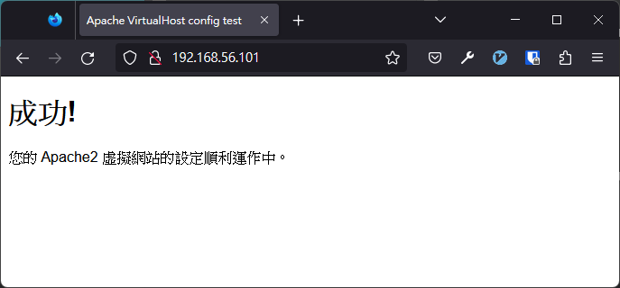

3.4 PHP
3.4.1 Step 1 — 安裝 php & php-mysql 插件
先確認 php 是不是我們要安裝的版本
sudo apt info php可以看到，目前 php 的依賴套件是 php7.4，代表將安裝的版本為 php7.4
Package: php
Version: 2:7.4+75
Priority: optional
Section: php
Source: php-defaults (75)
Origin: Ubuntu
Maintainer: Ubuntu Developers <ubuntu-devel-discuss@lists.ubuntu.com>
Original-Maintainer: Debian PHP Maintainers <team+pkg-php@tracker.debian.org>
Bugs: https://bugs.launchpad.net/ubuntu/+filebug
Installed-Size: 13.3 kB
Depends: php7.4
Download-Size: 2,712 B
APT-Sources: http://tw.archive.ubuntu.com/ubuntu focal/main amd64 Packages
Description: server-side, HTML-embedded scripting language (default)
PHP (recursive acronym for PHP: Hypertext Preprocessor) is a widely-used
open source general-purpose scripting language that is especially suited
for web development and can be embedded into HTML.
.
This package is a dependency package, which depends on latest stable
PHP version (currently 7.4).接著，我們再查詢一次 php7.4 會安裝什麼東西
sudo apt info php7.4這裡可以看到 php7.4 安裝了會安裝一些使 php7.4 順利運作的依賴套件，像是 libapache2-mod-php7.4、php7.4-fpm、php7.4-cgi 與 php7.4-common
Package: php7.4
Version: 7.4.3-4ubuntu2.5
Priority: optional
Section: php
Origin: Ubuntu
Maintainer: Ubuntu Developers <ubuntu-devel-discuss@lists.ubuntu.com>
Original-Maintainer: Debian PHP Maintainers <team+pkg-php@tracker.debian.org>
Bugs: https://bugs.launchpad.net/ubuntu/+filebug
Installed-Size: 73.7 kB
Provides: php
Depends: libapache2-mod-php7.4 | php7.4-fpm | php7.4-cgi, php7.4-common
Homepage: http://www.php.net/
Download-Size: 9,244 B
APT-Sources: http://tw.archive.ubuntu.com/ubuntu focal-updates/main amd64 Packages
Description: server-side, HTML-embedded scripting language (metapackage)
This package is a metapackage that, when installed, guarantees that you
have at least one of the four server-side versions of the PHP interpreter
installed. Removing this package won't remove PHP from your system, however
it may remove other packages that depend on this one.
.
PHP (recursive acronym for PHP: Hypertext Preprocessor) is a widely-used
open source general-purpose scripting language that is especially suited
for web development and can be embedded into HTML.一樣地，這裡也用相同的指令查詢 php-mysql 套件
sudo apt info php-mysql因為 php 已經有 php-common 依賴的，所以待會兩個套件一起安裝時，只會安裝一個 php-common
Package: php-mysql
Version: 2:7.4+75
Priority: optional
Section: php
Source: php-defaults (75)
Origin: Ubuntu
Maintainer: Ubuntu Developers <ubuntu-devel-discuss@lists.ubuntu.com>
Original-Maintainer: Debian PHP Maintainers <team+pkg-php@tracker.debian.org>
Bugs: https://bugs.launchpad.net/ubuntu/+filebug
Installed-Size: 13.3 kB
Depends: php-common, php7.4-mysql
Task: lamp-server
Download-Size: 2,000 B
APT-Sources: http://tw.archive.ubuntu.com/ubuntu focal/main amd64 Packages
Description: MySQL module for PHP [default]
This package provides a MySQL module for PHP.
.
PHP (recursive acronym for PHP: Hypertext Preprocessor) is a widely-used
open source general-purpose scripting language that is especially suited
for web development and can be embedded into HTML.
.
This package is a dependency package, which depends on Debian's default
PHP version (currently 7.4).確認完我們要安裝的版本是否正確後，用套件管理程式 apt 安裝套件。
sudo apt install php php-mysql --yes確認 php 是否安裝完成，可以用 which 指令確認：
which php當系統中有安裝複數個版本的 php 時，安裝的位置可能會有所不同，這在第 5 章，安裝 python 時會遇到。
/usr/bin/php確認 php 安裝版本：
php --versionPHP 7.4.3 (cli) (built: Jul 5 2021 15:13:35) ( NTS )
Copyright (c) The PHP Group
Zend Engine v3.4.0, Copyright (c) Zend Technologies
with Zend OPcache v7.4.3, Copyright (c), by Zend Technologies3.4.2 Step 2 — 建立虛擬網站（VirtualHost）
於 apache2 的設定資料夾中，新建一個叫做 asis.conf 的設定檔：
sudo vim /etc/apache2/sites-available/asis.conf寫入測試用的設定
<VirtualHost *:80>
ServerAdmin webmaster@localhost
DocumentRoot /var/www/asis
ErrorLog ${APACHE_LOG_DIR}/error.log
CustomLog ${APACHE_LOG_DIR}/access.log combined
</VirtualHost>透過 list 指令可以看到，資料夾的擁有者是 root。 我們在安裝 Apache2 的部分從 http://<虛擬主機的 ip 地址>/ 看到的就是位於 /var/www/html/ 中的首頁，接下來我們要刪除 Apache2 預設的設定，並測試自己建立的虛擬網站（VirtualHost）。
ls -al /var/www/total 12
drwxr-xr-x 3 root root 4096 Sep 1 06:51 ./
drwxr-xr-x 14 root root 4096 Sep 1 06:51 ../
drwxr-xr-x 2 root root 4096 Sep 1 06:51 html/一樣地，以同樣地方法建立 asis 資料夾
sudo mkdir /var/www/asis產生一個測試用的首頁
sudo vim /var/www/asis/index.html<!DOCTYPE html>
<html lang="zh-TW">
<head>
<meta charset="UTF-8">
<meta http-equiv="X-UA-Compatible" content="IE=edge">
<meta name="viewport" content="width=device-width, initial-scale=1.0">
<title>Apache VirtualHost config test</title>
</head>
<body>
<h1>成功!</h1>
<p>您的 Apache2 虛擬網站的設定順利運作中。</p>
</body>
</html>使用 a2dissite 指令關閉預設的設定檔（有興趣可以看一下預設的設定檔 000-default.conf，有助於了解設定檔案怎麼編寫）
sudo a2dissite 000-default.confSite 000-default disabled.
To activate the new configuration, you need to run:
systemctl reload apache2接著，啟用剛才創立的設定檔 asis.conf
sudo a2ensite asis.conf重新讀取剛才變更的設定，使新的設定生效
sudo systemctl reload apache2接著至瀏覽器打上虛擬主機的 ip 位址
http://<虛擬主機的 ip 地址>/
或是直接在終端機中使用指令 curl 測試 asis.conf 設定檔：
curl http://192.168.0.14<!DOCTYPE html>
<html lang="zh-TW">
<head>
<meta charset="UTF-8">
<meta http-equiv="X-UA-Compatible" content="IE=edge">
<meta name="viewport" content="width=device-width, initial-scale=1.0">
<title>Apache VirtualHost config test</title>
</head>
<body>
<h1>成功!</h1>
<p>您的 Apache2 虛擬網站的設定順利運作中。</p>
</body>
</html>